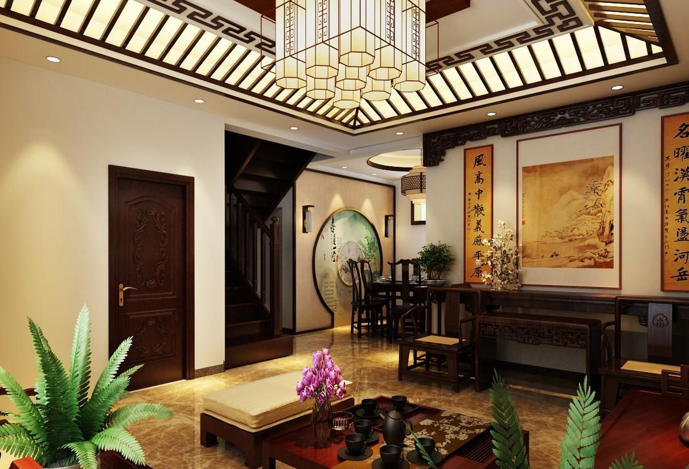

中式风格装修勾起怀旧思绪中式风格是比较自由的，装饰品可以是绿色植物、布艺、装饰画，以及不同样式的灯具等。这些装饰品可以有多种风格，但空间中的主体装饰物还是中国画、宫灯和紫砂陶等传统饰物。这些装饰物数量不多，在空间中却能起到画龙点睛的作用。
从简单到繁杂、从整体到局部，精雕细琢，镶花刻金都给人一丝不苟的印象。一方面保留了材质、色彩的大致风格，仍然可以很强烈地感受传统的历史痕迹与浑厚的文化底蕴，同时又摒弃了过于复杂的肌理和装饰，简化了线条气势恢弘、壮丽华贵、高空间、大进深、雕梁画栋、金碧辉煌，造型讲究对称，色彩讲究对比装饰材料以木材为主，图案多龙、凤、龟、狮等，精雕细琢、瑰丽奇巧。
以雕刻，镀金，嵌木，镶嵌陶瓷及金属等装饰方法为主。家具式样精炼、简朴，雅致；作工讲究，装饰文雅。曲线少，平直表面多，显得更加轻盈优美。